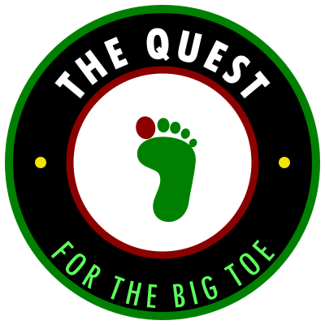

The Quest
The Quest Map
Where the COSMIC Framework stands on the road every theory travels, from an idea to acceptance, rejection or modification. The map is updated with every episode.
Last updated 19 September 2026
The road
From an Idea to an Answer
Every theory passes the same stages. Yellow marks where the framework is now. However a test turns out, the result is recorded as what was learned.
Idea
A question and a first answer to it.
Written down
Published in full so anyone can read and question it.
A Quest for The Big TOE and the framework papers
Pre-registered
Predictions dated and public before the data that tests them.
Three active missions
Tested
Independent data arrives and is compared with the prediction.
First data expected 2027
Learned
The prediction holds, the framework changes, or the idea is set aside.
Four earlier results agree with the framework but were not recorded before they were published, so they are counted as consistent, not predicted. See the record.
The four routes
Different Roads to the Same Test
A theory can reach the world by more than one road. The Quest follows all four and records what each one asks for, how long it takes and what comes back.
Academia
Journals, peer review, preprint servers, conferences and work with university researchers.
Where we are
Framework papers and the pre-registrations are public on Zenodo.
Government programs
Research grants, national laboratories, and proposals for time on public telescopes and data archives.
Where we are
Update coming with Episode 1.
Business
Industry partners, private funding, patents and products built on the research.
Where we are
Update coming with Episode 1.
Outsiders
Independent researchers, public data, citizen science and the open routes any person can use.
Where we are
An independent institute testing against public data, with a workspace for testing volunteers.
What we are waiting for
The Next Answers
Each test is a mission, named for good and never reused. These are the data releases that will decide the three active missions.

Midnight Phoenix COSMIC-008
A polarization signature in the cosmic microwave background, at an angular scale derived from the framework.

Midnight Eridanus COSMIC-005
Whether the change in dark energy that DESI reported persists in its five-year data.

Midnight Orion COSMIC-007
A preferred direction in galaxy distributions beyond 100 Mpc, toward (l, b) ≈ (210°, −20°).
Dates are the observatories' own estimates and move when theirs do. Full details are on the testing schedule.